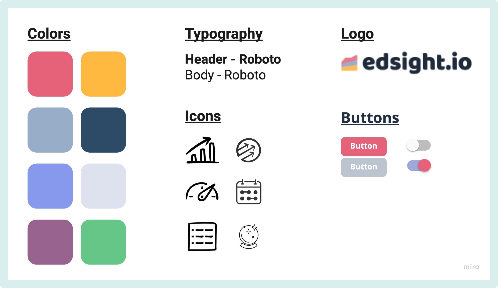
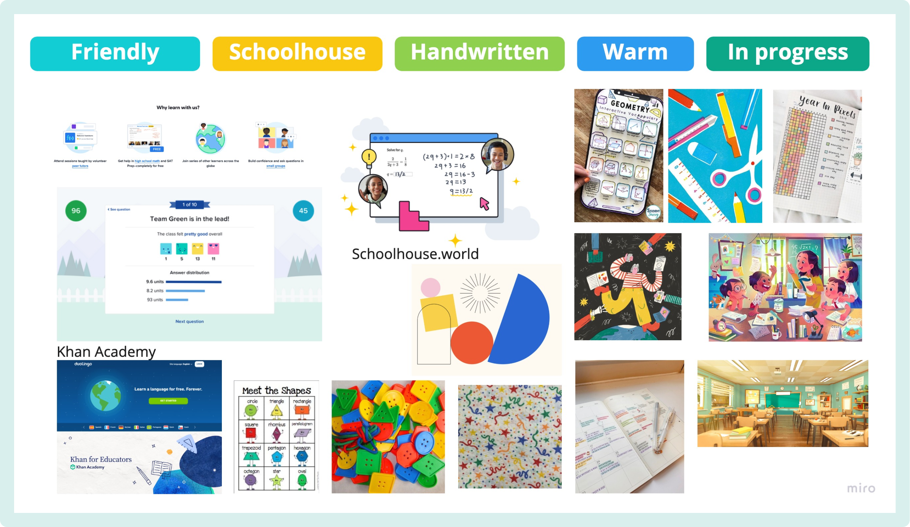
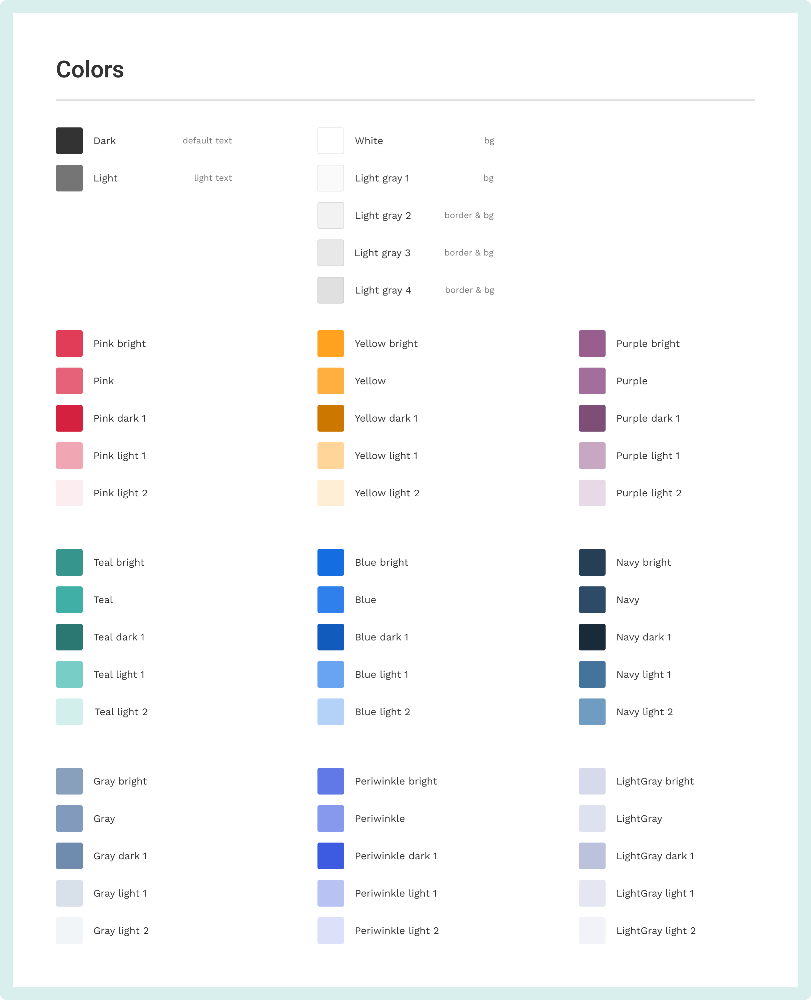
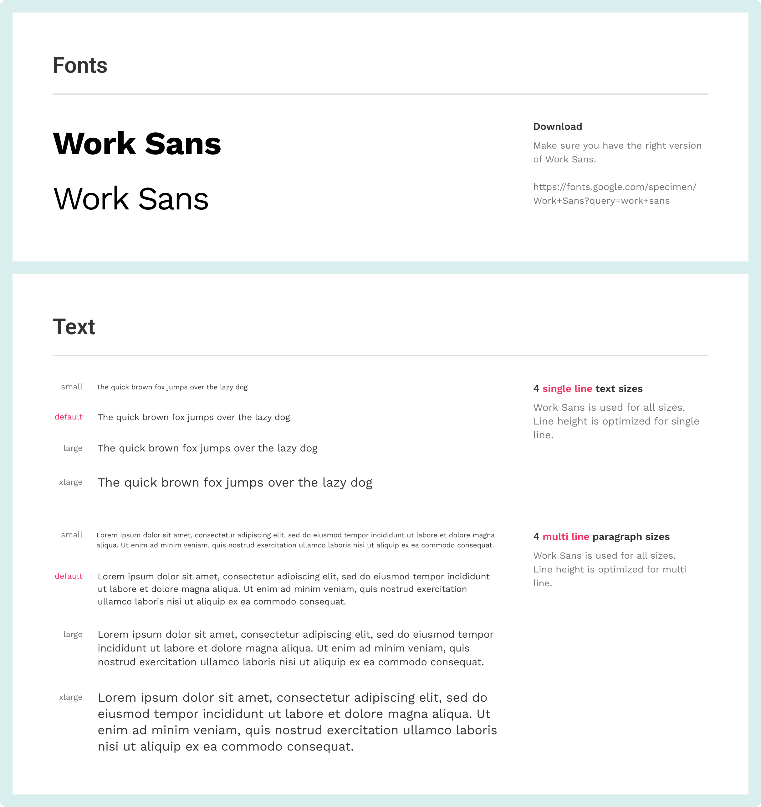
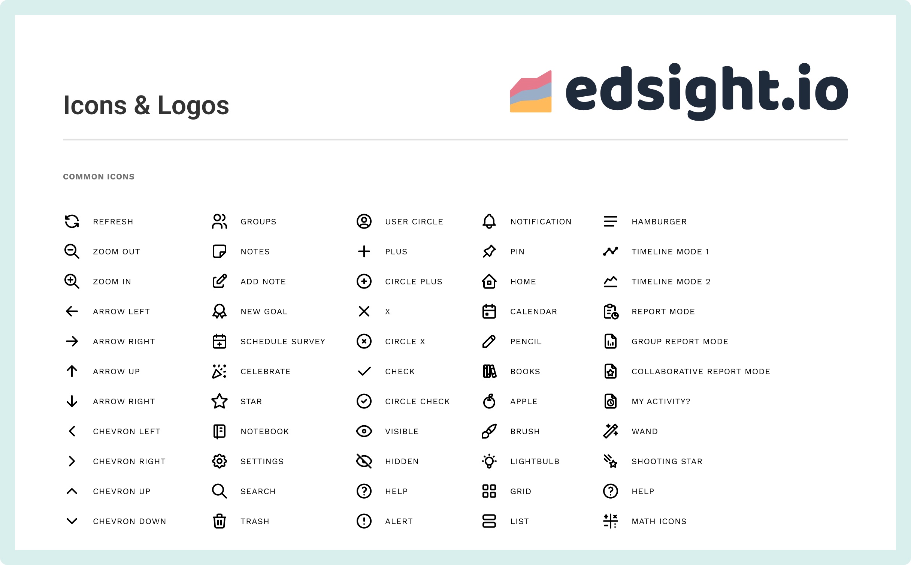
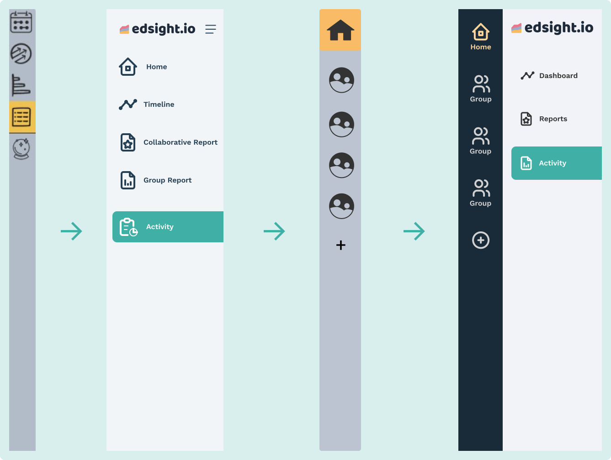
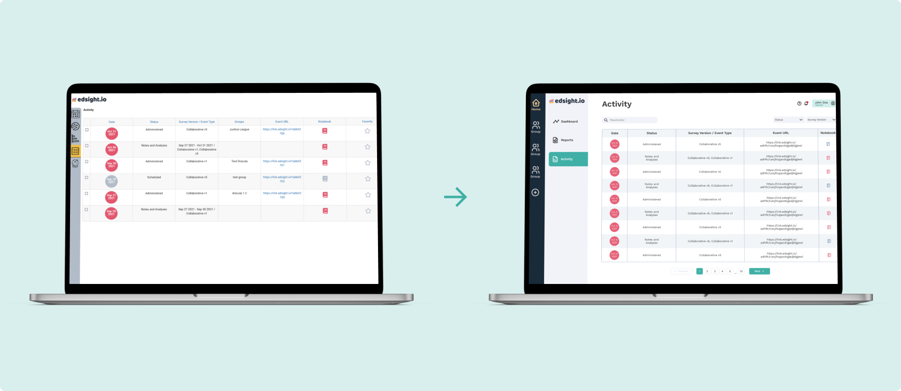
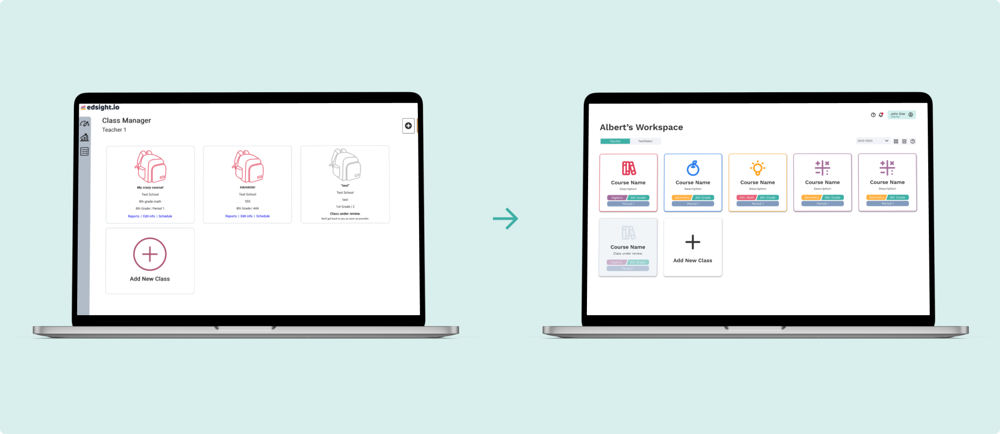

Edsight Design System
Rethinking data visualization dashboards for education
Duration
September - December 2022
Role
Designer, Web Developer
Tools
Figma, Miro, Google Suite
Context
This project was done in collaboration with the design team at the UC Irvine Design and Partnership Lab (daplab). At the daplab, we co-design (a participatory approach to designing solutions, in which community members are treated as equal collaborators in the design process) interactive learning tools with community partners and study how we can improve learning and education.
What is Edsight?
Edsight is a free data analytics platform designed to assist educators in improving their teaching pedagogy through data and reflection. It is part of a broader initiative called PMR2, which is a multi-year research-practice partnership between university researchers and school district partners across the United States to develop a system of practical measures, routines, and representations to support the implementation of instructional improvement strategies in middle-school mathematics.
Redefining Our Brand Identity
When we started out, the early versions of Edsight were up and running but without a design system. Throughout the designs there were issues of consistency, which decreased the coherence of the platform. We quickly realized we needed to create a design system to establish a common design language within the team and build our brand identity.
As we sat down as a team and began our brainstorming process, we took inspiration from the original Edsight webpage and created a style tile to identify the key design themes of the original website.

After creating our style tile and looking at other education softwares for modern inspiration, we then created a mood board to establish the major themes and styles of our new brand.
With Edsight being a tool for teachers to use in the classroom, we wanted to make sure that our design system reflected the aesthetics and atmosphere of a classroom, while also being modern and professional as a data visualization platform. Throughout this process, we were able to identify a few key pillars for our design system: friendly, schoolhouse, handwritten, warm, and in progress.

Creating Edsight 2.0
Colors
When selecting our new color palette, we had two main items in mind: accessibility & brand colors. We wanted to make sure the colors were distinct enough from each other to uphold the standard for common color blindness tests while having a high enough color contrast ratio with our background.

Typography
When selecting typography, we championed clarity. We compared o to 0 and l to 1 for legibility and distinguishability, before settling on the Work Sans font. In the comparisons of often mistaken characters, we looked for how distinguishable these characters were from each other to assess clarity. The Work Sans font ultimately had the clearest readability since it ensured each character was distinct and legible.

Icons
When choosing icons for our branding, we focused on two aspects: simple designs with recognizable imagery to help users intuitively understand what each icon represents.
We chose to use an open source icon library, Tabler icons, for easy implementation but we made sure the icon library we chose reflected our friendly and approachable brand with rounded strokes.

Implementing Our Design System
Navigation
For the side navigation menu, we went through multiple iterations. Throughout this process, we found that only having icons can leave users wondering what the tab represents and ultimately make the navigation process more time-consuming. Our final design includes text description, while also having an expandable doubled navigation bar to provide flexibility without losing the ease of access.

Activity List Page
When redesigning the activity page, we kept in mind our target audience and usability. To optimize the functionality of the page, we decided to create a simpler view that would be easier for users to understand and navigate at a much quicker rate. The search and filter option was specifically modified to a more simplistic system for increased usability.

Class Manager Page
The redesigned class manager page uses color coordination and associated logos to help make courses easier to identify. In addition, classes can easily be added using a modal, simplifying the process by keeping everything on the same page, rather than needing to navigating away.

Lessons Learned
Communication is essential, even with a design system
Although we have a set design system, we ran into inconsistency issues when implementing our design system. A problem we ran into was not specifying the amount of spacing between cards and headers. Instead of assuming and estimating the spacing between these elements, we caught this early on and communicated the amount of spacing we should have between these elements.
As projects get larger, it is common to miss elements in the initial planning process. Rather than having a lot to fix later, we minimize the number of changes by catching these missing elements, fixing them early on, and saving time in the long run.
Keep human-centered design practices in mind while designing
Since we are designing a product that would be used for teachers and instructional coaches, it is important to focus on issues such as cognitive load, attention, human perception, and data literacy. This was important to keep in mind while designing, as it helps create better experiences for users who often work collaboratively, have busy days with little structured time for reflection, and need to quickly pick up new tools.
What's next for Edsight?
We are working on redesigning the rest of the pages to incorporate our design system, while also iterating on designs to make them more user friendly. We are also working on implementing the design components in the codebase.
Additionally, we want to explore more accessibility features that can potentially increase inclusivity for users beyond those with colorblindness, including users who have difficulty hearing or face age-related barriers when using Edsight.

Half Court Sports
Building digital communities for women's sports

Amazon Redesign
Redesigning Amazon's homepage for goal-oriented shoppers
last updated april 2023